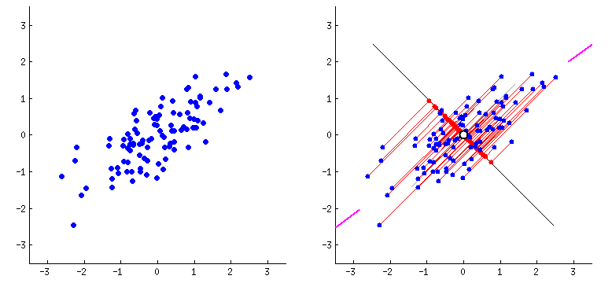

Math Details
This page serves as an introduction to exponential family principal component analysis (EPCA) (Collins et al., 2001). I aim to keep the material accessible to those with knowledge of college-level multivariable calculus and linear algebra (e.g., gradients, matrix rank).[1] For clarity and accessibility, I will attempt to write out non-trivial steps in (sometimes exhaustive) detail. We invite readers seeking a more concise, formal presentation of EPCA to explore the original paper or my more formal treatment of Bregman divergences.
Principal Component Analysis (PCA)
Principal component analysis (Pearson, 1901) is the most fundamental dimension reduction algorithm. It is important in data science and machine learning because it helps represent the key features of complex, high-dimensional data in an efficient, low-dimensional projection.
PCA (Pearson, 1901) is a powerful dimensionality reduction technique that transforms high-dimensional data into a lower-dimensional subspace while retaining as much variability as possible. It accomplishes this by identifying the directions of maximum variance in the data, known as principal components, and projecting the data onto these new orthogonal axes. PCA finds extensive applications in various domains, including data visualization, noise reduction, feature extraction, and exploratory data analysis.
PCA has many derivations and interpretations, but I only focus on two here. The first is as an intuitive geometric model; the second is as an equivalent Gaussian denoising procedure.
The Geometric View
The first interpretation of PCA is, in my opinion, the most intuitive. Given a high-dimensional dataset $X \in \mathbb{R}^{n \times d}$, how can we find the nearest (w.r.t. the squared Euclidean distance) low-dimensional projection $\Theta$? More formally, we frame this as a low-rank matrix approximation problem
\[\begin{aligned} & \underset{\Theta}{\text{minimize}} & & \|X - \Theta\|_F \\ & \text{subject to} & & \mathrm{rank}\left(\Theta\right) \leq \ell \end{aligned}\]
where $\| \cdot \|_F$ is the Frobenius norm and $\ell$ is the target dimension.

Figure from Parth Dholakiya.The Probabilistic View
We will now show that the geometric PCA objective is equivalent to the negative log-likelihood under the unit Gaussian model with a mean at $\theta$. First, recall that the likelihood of a unit Gaussian with mean $\theta$ is
\[L(\theta) = \frac{1}{\sqrt{2\pi}}e^{-\frac{(x - \theta)^2}{2}}\]
so the log-likelihood is
\[\begin{aligned} LL(\theta) = \log\bigg[\frac{1}{\sqrt{2\pi}}e^{-\frac{(x - \theta)^2}{2}}\bigg] = -\log \sqrt{2\pi} - \frac{(x-\theta)^2}{2}. \end{aligned}\]
Thus, the negative log-likelihood is equivalent (up to a constant) to minimizing the Frobenius norm in the PCA low-rank matrix formulation. Intuitively, this means that the geometric task of finding the nearest low-dimensional projection is the same as the probabilistic task of recovering some low-dimensional latent structure from a high-dimensional observation with Gaussian noise.

Exponential Family PCA (EPCA)
EPCA (Collins et al., 2001) is an extension of PCA analogous to how generalized linear models (McCullagh and Nelder, 1989) extend linear regression. In particular, EPCA can accommodate noise drawn from any exponential family distribution. I provide a more detailed discussion of Bregman divergences and their deep relation to the exponential family here. At a high level, EPCA replaces the geometric PCA objective with a general probabilistic objective that minimizes the generalized Bregman divergence rather than the Frobenius norm (which is a special case). In particular, the EPCA objective for some strictly convex, continuously differentiable function $G(\theta)$ (often the log-partition of a parametric exponential family distribution) is
\[\begin{aligned} & \underset{\Theta}{\text{minimize}} & & B_F(X \| g(\Theta)) + \epsilon B_F(\mu \| g(\Theta)) \\ & \text{subject to} & & \mathrm{rank}\left(\Theta\right) \leq \ell \end{aligned}\]
where $g$ is the link function (the derivative of the log-partition $g(\theta) = \nabla_\theta G(\theta)$), $F$ is the convex conjugate of the log-partition, and both $\epsilon > 0$ and $\mu \in \text{Range(g)}$ are both hyperparameters used to regularize the objective (i.e., ensure real stationary points).
References
- Azoury, K. S. and Warmuth, M. K. (2001). Relative Loss Bounds for On-Line Density Estimation with the Exponential Family of Distributions. Machine learning 43, 211–246.
- Collins, M.; Dasgupta, S. and Schapire, R. E. (2001). A Generalization of Principal Components Analysis to the Exponential Family. Advances in Neural Information Processing Systems 14.
- McCullagh, P. and Nelder, J. A. (1989). Generalized Linear Models. 2 Edition, Chapman & Hall/CRC Monographs on Statistics and Applied Probability (Chapman & Hall/CRC, Philadelphia, PA).
- Pearson, K. (1901). On Lines and Planes of Closest Fit to Systems of Points in Space. Philosophical Magazine 2, 559–572.
- Roy, N.; Gordon, G. and Thrun, S. (2005). Finding Approximate POMDP solutions Through Belief Compression. Journal of Artificial Intelligence Research 23, 1–40.
- 1If you are not yet familiar with these concepts, I suggest exploring these resources on gradients and matrix ranks.